ÁRBOLES BINARIOS
Escrito por Adrián Quiroga Linares. adrianql5
Un árbol es una estructura de datos no lineal con un organización jerárquica de elementos homogéneos (del mismo tipo), donde cada elemento tiene un único padre, pero generar varios hijos.
1.1 Conceptos Básicos:
- Nodo: cada elemento componente del árbol
- Ascendientes: nodos de los niveles superiores
- Descendientes: nodos sucesores de uno dado, niveles inferiores
- Nodo raíz: nodo original del árbol, nivel más alto y no se deriva de ningún nodo padre
- Nodo hoja: nodo terminal del árbol. No tiene ningún descendiente.
- Subárbol: subconjunto de elementos de un árbol que a su vez mantienen estructura de árbol
- Nodo padre: nodo ascendiente directo del elemento actual. Solo existe un nodo padre por cada nodo, o cero en caso del nodo raíz.
- Nodo hijo: nodo descendiente directo del elemento actual
- Nodos hermanos: nodos que se encuentras en el mismo nivel y derivan del mismo padre
- Nodo interno: nodo que cuenta con padre e hijo.
- Camino: secuencia de nodos entre un nodo origen y un nodo destino donde cualquier par de nodos consecutivos son padre e hijo
- Rama: camino desde nodo raíz hasta un nodo hoja
- Grado: número de hijos de un nodo dado
- Altura: nivel más alto de un árbol, número de nodos de la rama más larga
- Grado de un árbol: máximo grado de sus nodos
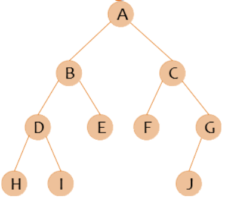
1.2 Tipos de Árbol
Árbol Binario:
Árbol donde cada nodo tiene como máximo grado 2 (2 nodos hijo).
Árbol Binario Equilibrado:
árbol binario donde la diferencia de altura entre los subárboles de cada nodo es como máximo una unidad. Esto quiere decir que si por ejemplo tengo una hoja en el nivel 3 y otra en el 4 estará equilibrado. Si tiene una en el 2 y otra en el 4 no estará equilibrado.
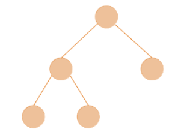
Árbol Binario Totalmente equilibrado:
Árbol binario donde la atura de los subárboles de cada nodo es igual. Todo los nodos hoja de cada uno de los subárboles de un nodo dado están en el mismo nivel.
Árbol Binario Lleno:
Árbol donde todos los nodos hoja se encuentran en el mismo nivel y sus padres tienen todos 2 hijos.
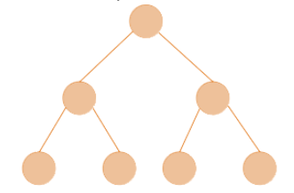
Un árbol binario lleno también es totalmente equilibradoÁrbol binario completo:
Árbol binario donde en el último nivel todos los nodos hoja se distribuyen de izquierda a derecha sin dejar huecos Un árbol binario completo es equilibrado
1.3 TAD ABIN EXPLICADO
Abin será un puntero a un struct, por ello hacemos
typedef struct celda *Abin
der e izq serán puntero que apunta a otra celda del mismo tipo.
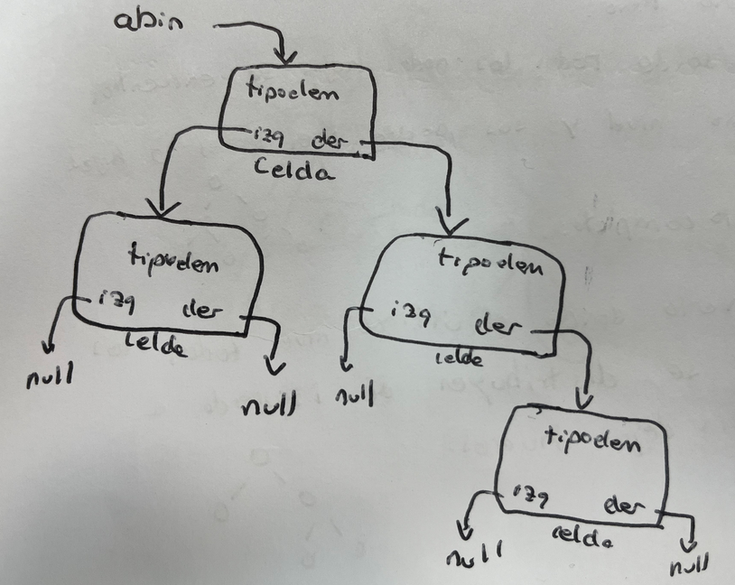
Crear: hacemos que abin apunte a null inicialmente.
void crear(abin *A){
*A=NULL;
}
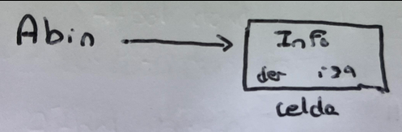
Der e Izq: nos devolveran los consiguientes nodos
abin izq(abin A){
return A->izq;
}
abin der(abin A){
return A->der;
}
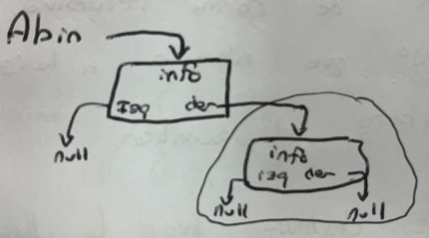
Insizq e Insder: insertan las celdas
- Si acabamos de crear el árbol y está vacío, creamos el nodo con un Abin aux reservando memoria y apuntamos Abin a este nuevo nodo.
- Si no está vacío simplemente lo añadimos apuntando el de la derecha a este nuevo nodo.
void insizq/insder(abin *A, tipoelem E){
abin aux;
aux=(abin)malloc(sizeof(struct celda));
aux->info=E;
aux->izq=NULL;
aux->der=NULL;
if(esVacio(*A))
*A=aux;
else
(*A)->izq=aux;
//(*A)->der=aux;
}
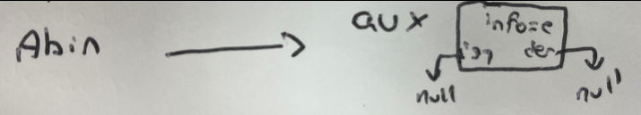
Suprimir: Creamos un Abin aux que será igual a lo que está en el nodo que queremos eliminar.
- En caso de no ser vacío ese aux suprimo lo que esta a la derecha y a la izquierda con la misma función de forma recursiva. Después hago que abin al lado que deseo eliminar apunte a null y libero el nodo auxiliar.
void supizq/supder(abin *A){
abin aux;
aux=izq(*A); //aux=der(*A);
if(!esVacio(aux)){
supizq(&aux);
supder(&aux);
(*A)->izq=NULL; //(*A)->der=NULL;
free(aux);
}
}
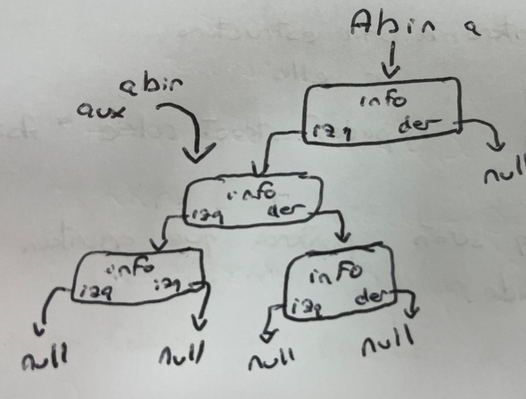
Eliminar: sigo la lógica de la función anterior pero desde la raíz
void destruir(abin *A){
abin aux;
aux=*A;
if(!esVacio(aux)){
supizq(&aux);
supder(&aux);
free(aux);
*A=NULL;
}
}
Funciones Restantes:
unsigned es_vacio(abin A){
return (A==NULL);
}
void leer(abin A, tipoelem *E){
*E=A->info;
}
void modificar(abin A, tipoelem E){
A->info=E;
}
1.4 Recorridos
Se usan para enumerar los elementos del árbol
Recorrido en anchura
Consiste en recorrer los distintos niveles de forma ordenada, del menos al mayor. Implementación no recursiva mediante una cola como estructura auxiliar.
- Empezamos en el nivel más bajo (nodo raíz).
- Sacamos el primer elemento de la lista
- Miramos si tiene descendiente, de tenerlo se encola
- Repetimos los pasos hasta que esté vacía
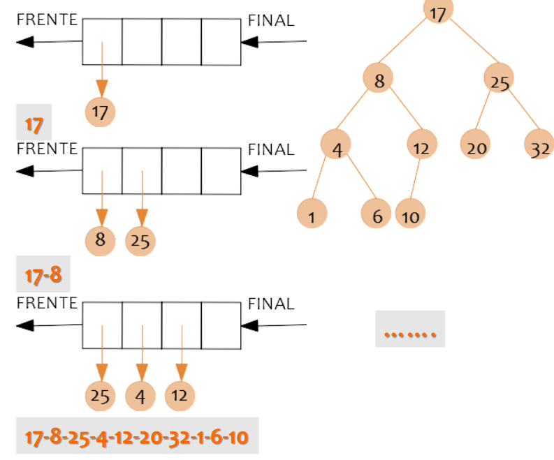
Recorridos en Profundidad:
Tiene 2 tipos de implementaciones, recursivas y no recursivas:
Recursivas:
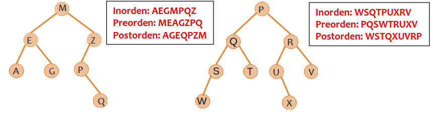
En cada nodo, en función del recorrido seleccionado, se imprime el elemento actual o se sigue descendiendo por el subárbol hasta llegar a un nodo hoja y empieza a subir hasta los demás. #### Inorden Izquierda-Raíz-Derecha #### Preorden Raíz-Izquierda-Derecha #### Postorden Izquierda-Derecha-RaízNo recursivas:
Utilizamos una pila:
- Se guardan los elementos izquierdos en la pila hasta llegar a un nodo hoja
- Se desapila el tope, se imprime y se inserta en la pila el hijo derecho.
- Repetimos estos pasos sucesivamente hasta que se vacíe
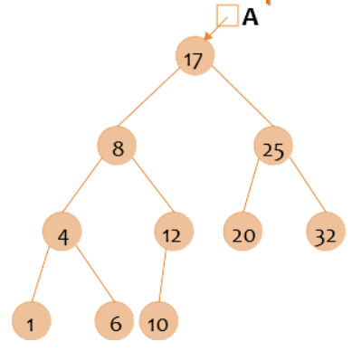
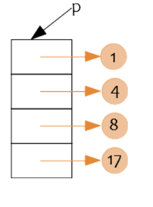
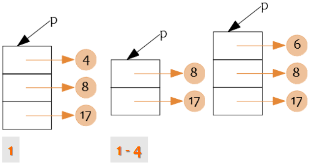
1.5 Árboles de Expresión
- A+B: + es el nodo padre, A el hijo izquierdo y B el hijo derecho
- Si a los árboles de expresión se les realiza el recorrido inorden , obtenemos la notación natural de la operación matemática.
- Usamos 2 pilas, una de operadores y otra de operandos . Se van apilando hasta llegar a un operador cuya prioridad es menor o igual que la del tope de la pila. Esto provoca que se desapile en dicha pila y se vaya formando la expresión en la pila de operandos con los operadores desapilados.
- EL paréntesis izquierdo se apila siempre, y el derecho produce siempre que se desapile hasta llegar al paréntesis izquierdo.
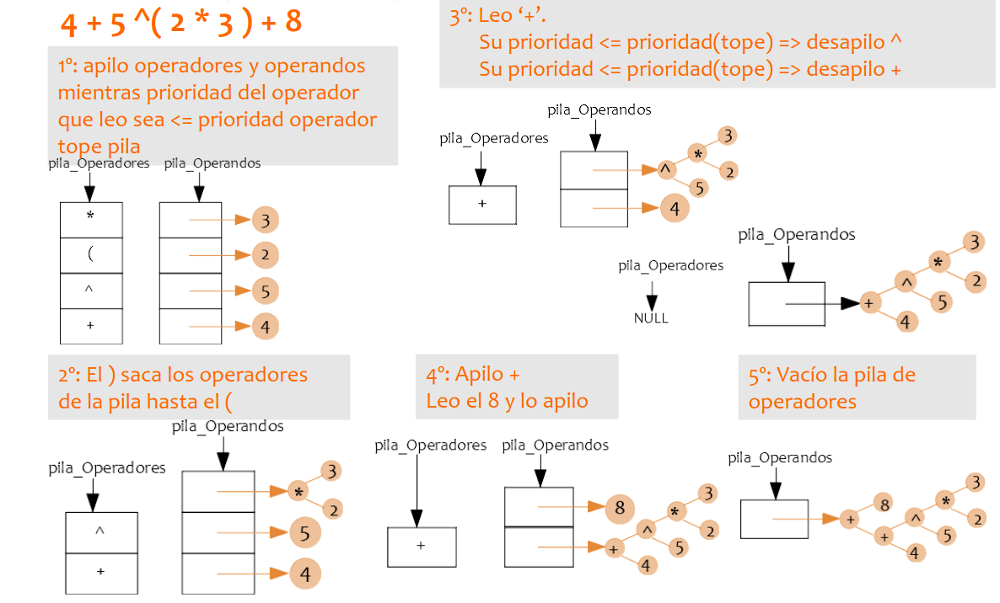